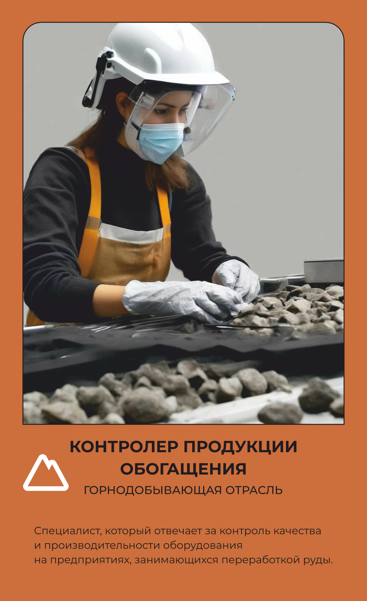

Контролер продукции обогащения
Проверяет, чисто ли обогатили руду.
Основной вид деятельности
Специалист, ответственный за наблюдение и контроль за процессами обогащения сырья с целью получения качественного конечного продукта.
Что делает на рабочем месте
Контролёр продукции обогащения проверяет, насколько чисто обогатили руду — то есть отделили полезный минерал от пустой породы — и соответствует ли готовый концентрат техническим требованиям. Он берёт пробы на разных этапах процесса, работает с контрольно-измерительными приборами и автоматикой (КИПиА), а физико-химические свойства продукции проверяет в лаборатории. Одновременно следит за показаниями датчиков на самом оборудовании, чтобы вовремя заметить отклонение от технологического режима. Обнаружив проблему, разбирается в её причине и предлагает, как скорректировать процесс обогащения. Результаты анализов и наблюдений заносит в компьютер и оформляет как техническую документацию. Работает в защитном костюме или халате, каске и с респиратором — рядом с обогатительным оборудованием всегда есть пыль и шум.
Что производит
контроль качества продукции, получаемой при обогащении полезных ископаемых оценка физико-химических свойств продукции и ее соответствия требованиям технической документации работа с аналитическими приборами и методами анализа контроль за соблюдением технологических процессов и требований безопасности на производстве.
Оборудование и инструменты
Спецодежда и СИЗ
одежды
Костюм для защиты от общих производственных загрязнений и механических воздействий ИЛИ Халат и брюки для защиты от общих производственных загрязнений и механических воздействий Перчатки с полимерным покрытием Каска защитная Подшлемник под каску Очки защитные Наушники противошумные (с креплением на каску) ИЛИ Вкладыши противошумные Средство индивидуальной защиты органов дыхания (СИЗОД) противоаэрозольное Зимой дополнительно: Костюм на утепляющей прокладке
Спецобувь
обуви
Ботинки кожаные с защитным подноском ИЛИ Сапоги кожаные с защитным подноском, ИЛИ Сапоги резиновые с защитным подноском
Где учиться
21.01.16 обогатитель полезных ископаемых
Где работать
Похожие профессии
Данные — карточка 7 из 160, отрасль «Горно-добывающая». Зарплата — оценочная вилка по региону.